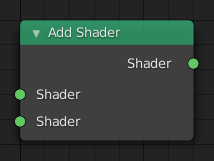

Blender 2.93 Manual
入门
用户界面
编辑器
场景&物体
建模
雕刻&绘制
蜡笔
动画 & 绑定
物理
渲染
简介
Eevee
Cycles
工作台
相机
灯光
材质
着色节点
简介
输入
输出
着色器
相加着色器
输入
属性
输出
例子
各向异性 BSDF
背景
漫射 BSDF
自发光（发射）
玻璃 BSDF
光泽 BSDF
毛发 BSDF
阻隔
混合着色器
原理化BSDF
原理化毛发BSDF
原理化体积
折射 BSDF
高光 BSDF
次表面散射 (SSS)
卡通 BSDF
半透 BSDF
透明 BSDF
丝绒 BSDF
体积吸收
体积散射
纹理
颜色
矢量
转换器
组
开放着色语言
色彩管理
Freestyle
层 & 通道
渲染输出
合成
运动跟踪 & 遮罩
视频编辑
Files & Data System
插件
高级
问题排查
词汇表
贡献文档
Blender 2.93 Manual
»
渲染
»
着色节点
»
着色器
»
相加着色器
相加着色器
¶

Add Shader.
¶
相加着色器
节点用于合并两个
着色器
。
输入
¶
着色器
标准着色器输入。
属性
¶
这个节点没有属性。
输出
¶
着色器
标准着色器输出。
例子
¶
将光泽和漫反射着色器混合在一起，可以制作出漂亮的陶瓷材料。
¶
2.93
Loading...
zh-hans
Loading...